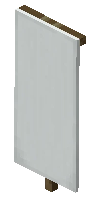

Minecraft Tools
Идеально точный перевод координат между Overworld и Nether.
Интерактивный визуализатор и генератор команд для брони.
Проектирование узоров на флагах с экспортом команд.

Новые крутые инструменты уже находятся в разработке.